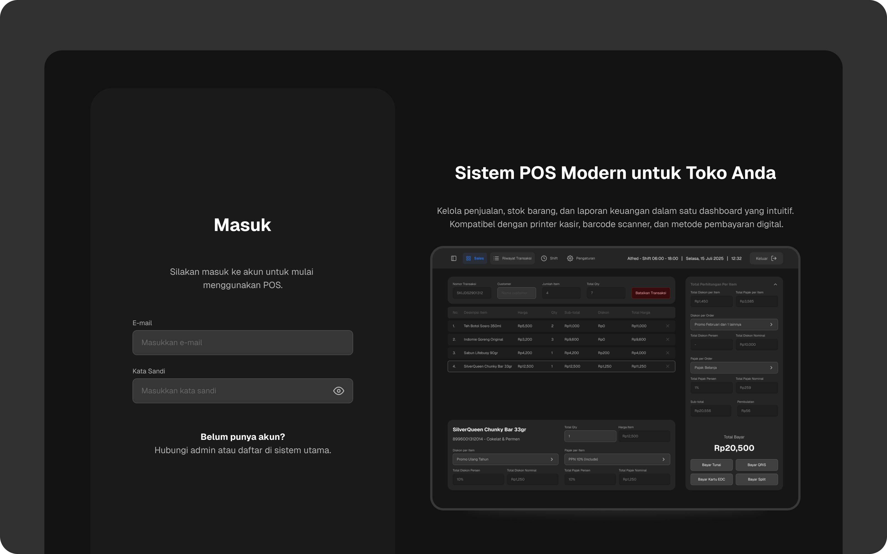
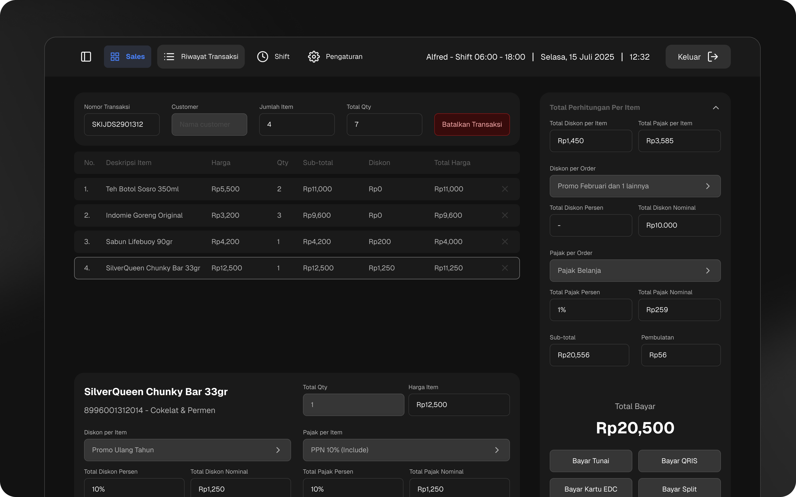
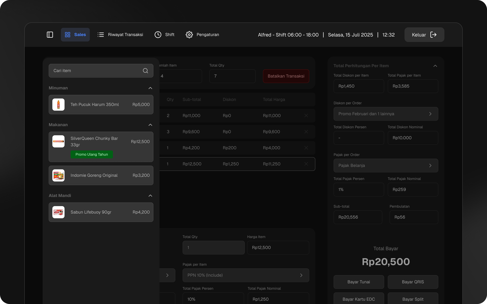

Aistech: Retail POS System Balancing Local Retail Research with Modern Simplicity

Client
This was an Aistech product exploration for a retail business prospect, aimed at replacing manual transaction recording with a modern point-of-sale system.
Problem
Like most POS systems, the core need was straightforward, replacing manual transaction logging with a digital system. There was no unusual edge case here. What made this project distinct was the backoffice complexity retail operations require, far more layered than a typical horeca POS needs to handle.
Process
I researched the difference between cashier-style POS and retail POS in depth, visiting and taking notes at major retail chains in Makassar, including Lotte, Indomaret, Alfamart, Diamond, and TransMart, then compared those findings against my own past research from designing cashier POS systems. The result blended patterns drawn from established local retail with a modern, simplified aesthetic, aiming not just to digitize the process but to make it genuinely pleasant to use.
Outcome
Retail-Grade Backoffice System, Design Complete
Delivered a full retail POS and backoffice design grounded in real-world research. The project paused after the design phase when the cost didn't align with the prospect's budget (design was completed before the quotation was sent), but the system remains fully ready for development.

